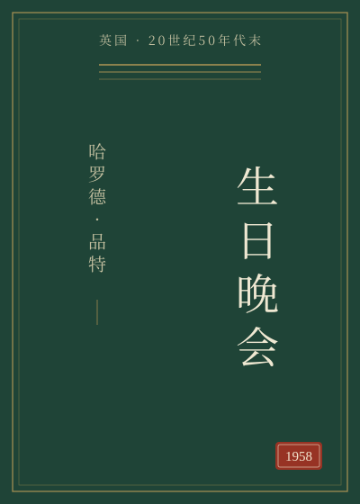
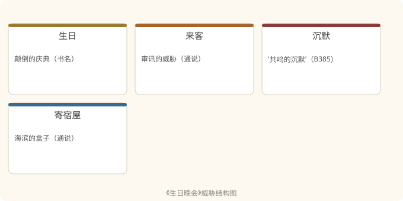

生日晚会
一、基本信息
| 作者 | 哈罗德·品特 |
|---|---|
| 成书/出版 | 1958年（Britannica B385：The Birthday Party——1958首演——'puzzled the London audiences and lasted only a week'） Harold Pinter — Encyclopaedia Britannica（百科全书） |
| 国别/地区 | 英国 |
| 时代 | 现当代 · 20世纪50年代末 |
| 体裁 | 戏剧 |
| 语言 | 英语 |

《生日晚会》威胁结构图（主题·结构图）
二、创作背景
Britannica（B385）：首部多幕剧——'puzzled the London audiences and lasted only a week'——确立'comedy of menace'（威胁的喜剧）。
Britannica（B385）：'disjointed and oddly ambivalent conversation that is punctuated by resonant silences'——'Pinteresque'。
题材（通说待核）：海滨寄宿屋的生日聚会——两个'来客'与斯坦利的审讯。
三、内容脉络
（通说待核）戈德堡与麦卡恩的'审讯'：生日庆典的颠倒。
（通说待核）梅格的'生日'与斯坦利的崩解。
四、主要人物表
| 人物 | 身份 | 说明 |
|---|---|---|
| 斯坦利 | 寄宿者/前钢琴师 | （通说待核，B385未载） |
| 戈德堡 | 来客 | （通说待核） |
五、主题与艺术特点
- '威胁的喜剧'（B385：comedy of menace）。
- '共鸣的沉默'（B385：resonant silences）。
- 身份的审讯（通说待核）。
六、影响与评论
- Britannica：'comedy of menace'的确立（B385）。
Harold Pinter — Encyclopaedia Britannica（百科全书） - Britannica：2005诺奖（B385 交叉）。
Harold Pinter — Encyclopaedia Britannica（百科全书）
七、阅读建议
难点
- '沉默'的读法。
- '威胁'的日常化。
- 《生日晚会》中译名（《生日聚会》）待核。
- 英文原版。
品特首选；后接《看管人》《背叛》。
八、待核实
- 斯坦利/戈德堡人名核对（通说）。
- 1958年首演（Lyric Hammersmith说）待核。
- '一剧一周'细节核对（B385已载）。